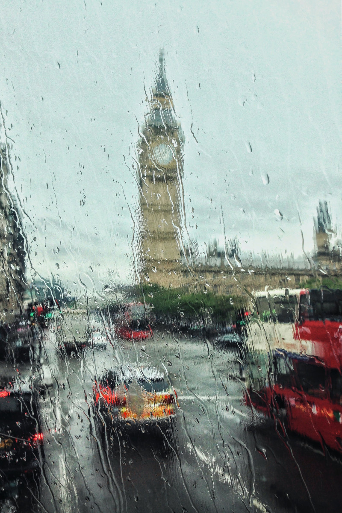

Precious Gallery Newspaper Demo
Elevate Your Content with Elegance.


* Many thanks to the people of Pexels.com for the beautiful images: Adrien Olichon, Alex Andrews, Alexander Grey, Alexandra Maria, Ali Pazani, Anastasiya Gepp, Andrea Yurko, Arianna Jadé, August De Richelieu, Barry Plott, Bestbeels, Carlos Spitzer, Carolyn, Cottonbro Studio, Daniyal Ghanavati, Darius Krause, Dawid Boldys, Designecologist, Diego Henao, Egor Kamelev, Elina Fairytale, Eliza Aldea, Football Wife, Frank Good, Genaro Servín, GeorgeDesipris, Harrison Haines, Hồng Xuân Viên, Ian Beckley, Jadson Thomas, Jared Butler, JessicaLewis, Jill Wellington, Kasia Palitava, Kelvin Valerio, Lil Artsy, Luis Quintero, Lumn, MarcoTrinidad, Marko Blazevic, Markus Spiske, Matheus Bertelli, Michael Noel, Mihai Bența, MinAn, Motional Studio, Nadine Wuchenauer, Ogeday, Omar Houchaimi, Pranav Digwal, RichardVerbeek, Sid Ali, Simon Berger, Timothy Paule II, Todd Trapani, Torben Bühl, Vincent MaJanssen, Vishal Shah, Wallace Chuck, Yan Krukau, Yi Ren, Zetong Li.